Cube Puzzles
MIT Media Lab | Summer 2017
Overview
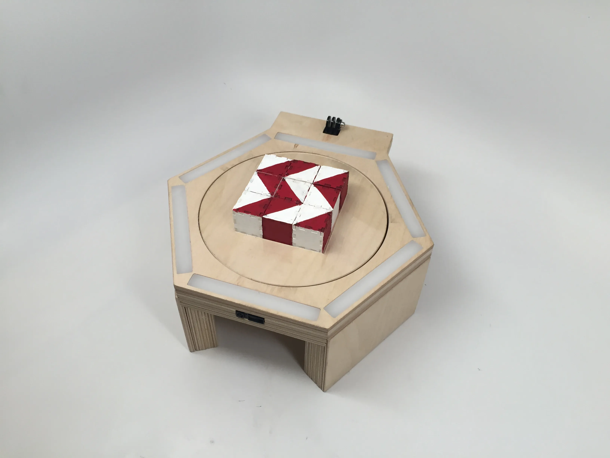
As an undergraduate researcher with the MIT Media Lab's Affective Computing Group, I worked on Cube Puzzles under the mentorship of then research affiliate Kristy Johnson. This work was part of the larger SPRING platform: A Smart Platform for Research, Intervention, and Neurodevelopmental Growth. Cube Puzzles is a tangible platform for dynamic assessment of cognitive and psychomotor skills. It is a play-led module in which children move and orient colored blocks to match a displayed design, while the system dynamically tracks their placement and orientation. This module was inspired by the Block Design activity in the Wechsler Intelligence Scales (e.g., WAIS), quantifying visual-spatial orientation and motor skills.
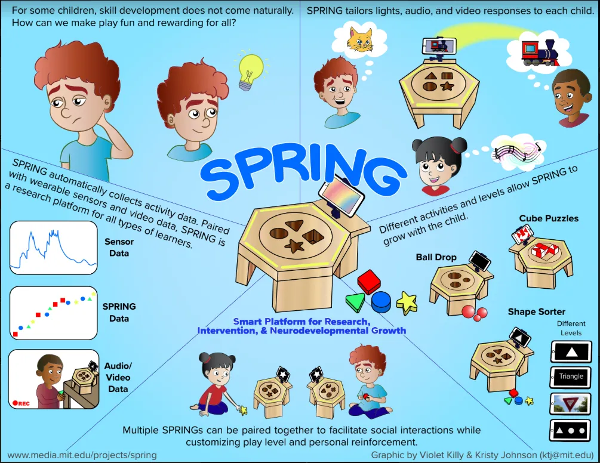
Key Contributions
- Designed and machined a wooden housing for the embedded electronics using Solidworks and CNC Milling techniques
- Soldered, integrated, and tested printed circuit boards which enabled the collection of real-time data
- Developed Arduino and MATLAB code for sensor calibration and block detection and tracking
- Created a comprehensive infographic for the platform using Adobe Illustrator (shown left)
- Assisted in designing a user study and writing an academic paper for submission in the 2019 CHI Conference
Designing the Housing
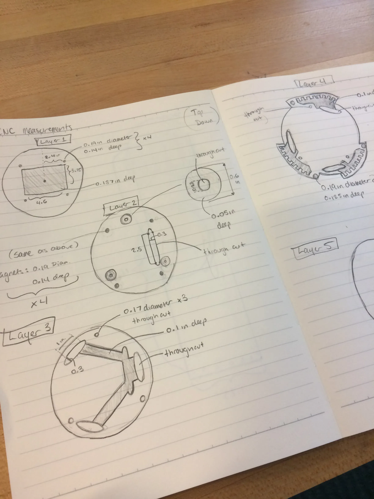
I was first tasked with designing a wooden housing for the printed circuit boards (PCBs) that would be used for detecting the blocks. The housing had to seamlessly integrate with the existing SPRING platform, so I modified previous module designs to accomodate the PCBs and routed wires and generated a CAD assembly in SolidWorks.
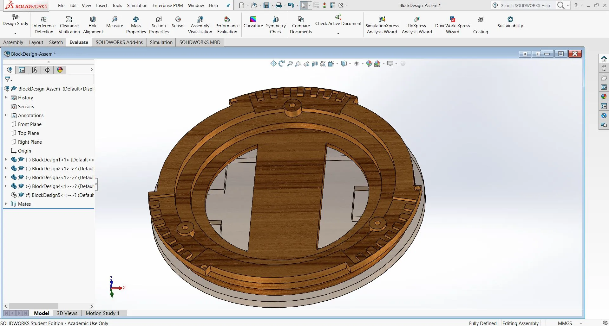
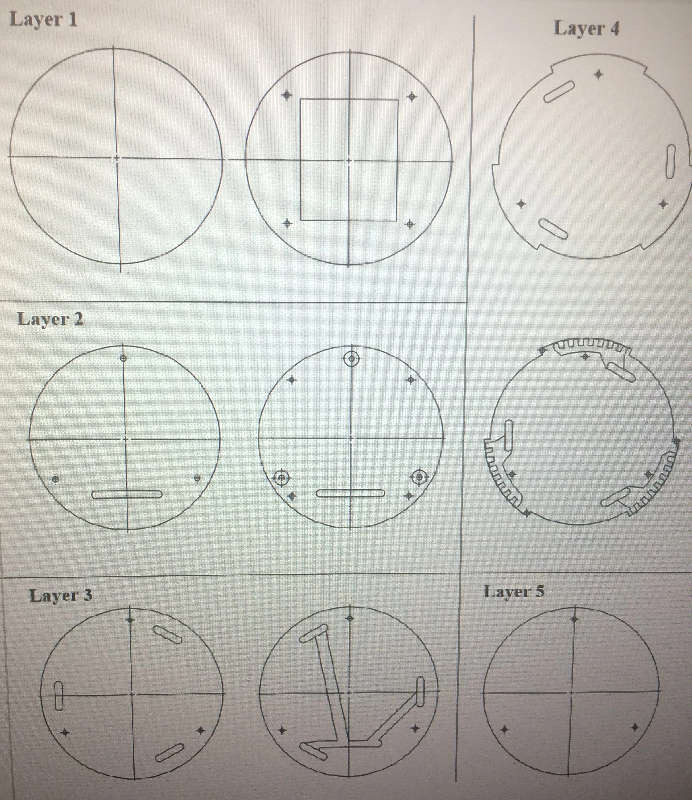
I cut out the layers on a ShopBot CNC machine, with the final housing (before PCB installation) shown below.
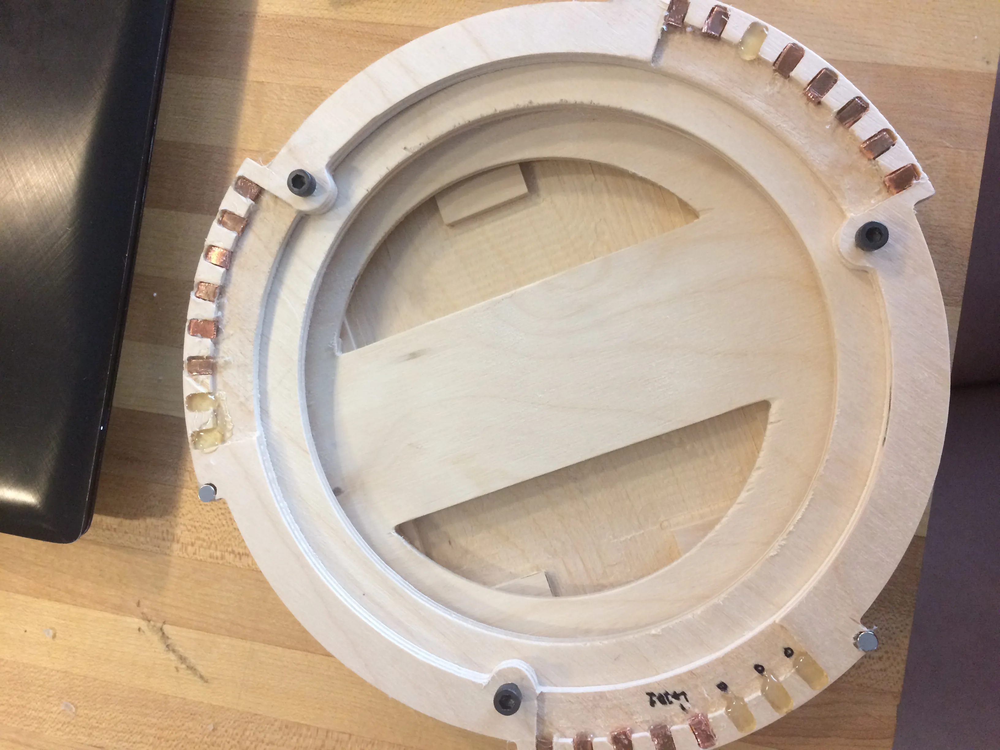
PCB Assembly and Testing
I assembled the existing PCBs (my first time soldering surface mount components), which used a clever combination of Hall effect sensors and multiplexers to detect magnets embedded in the blocks. I then wrote a mixture of MATLAB and Arduino code that would randomly select and display one of ten block patterns, detect block placement and orientation, and tell the user when they had succesfully completed the design.
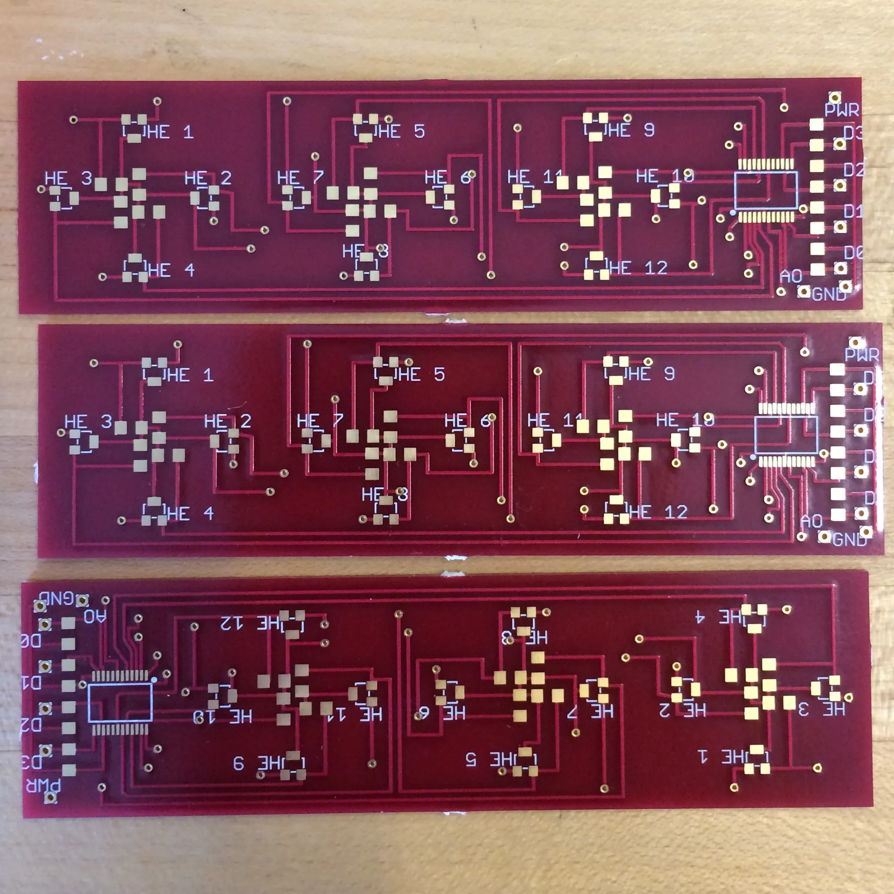
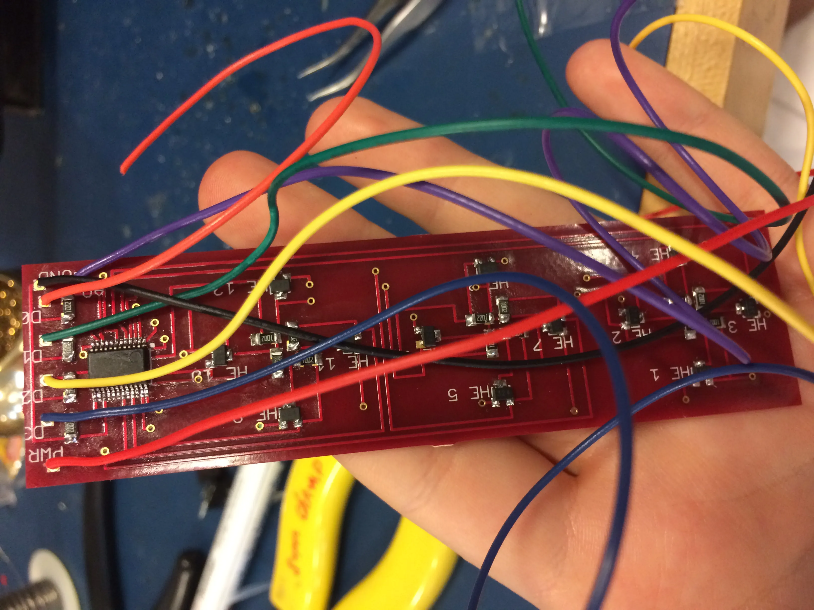
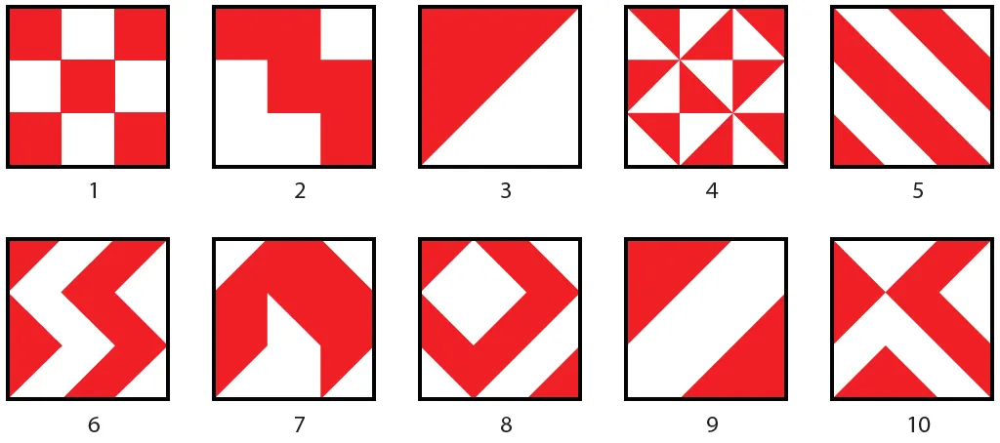
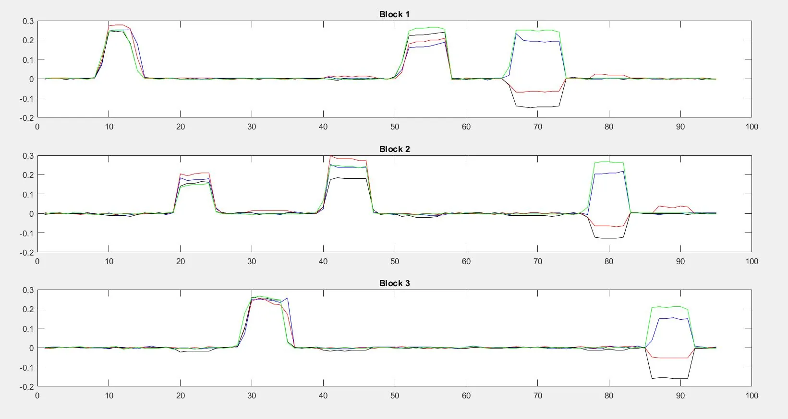
Integration and Final Assembly
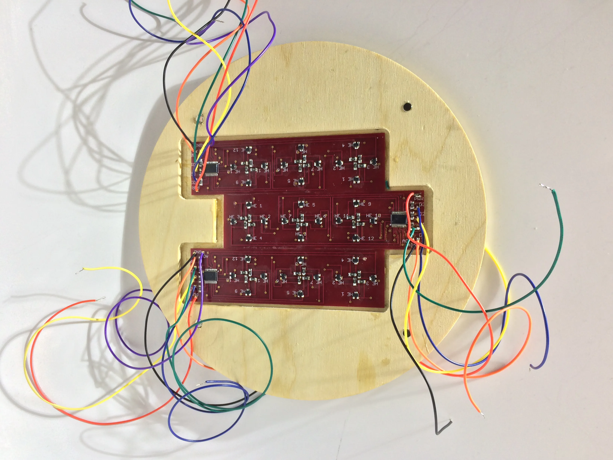
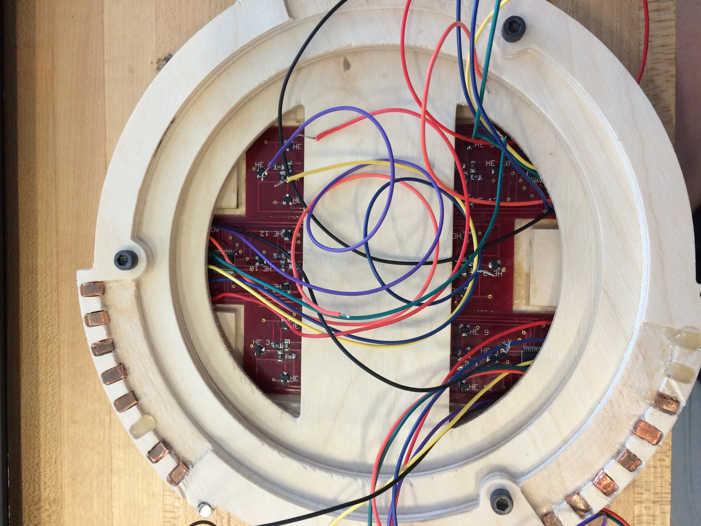
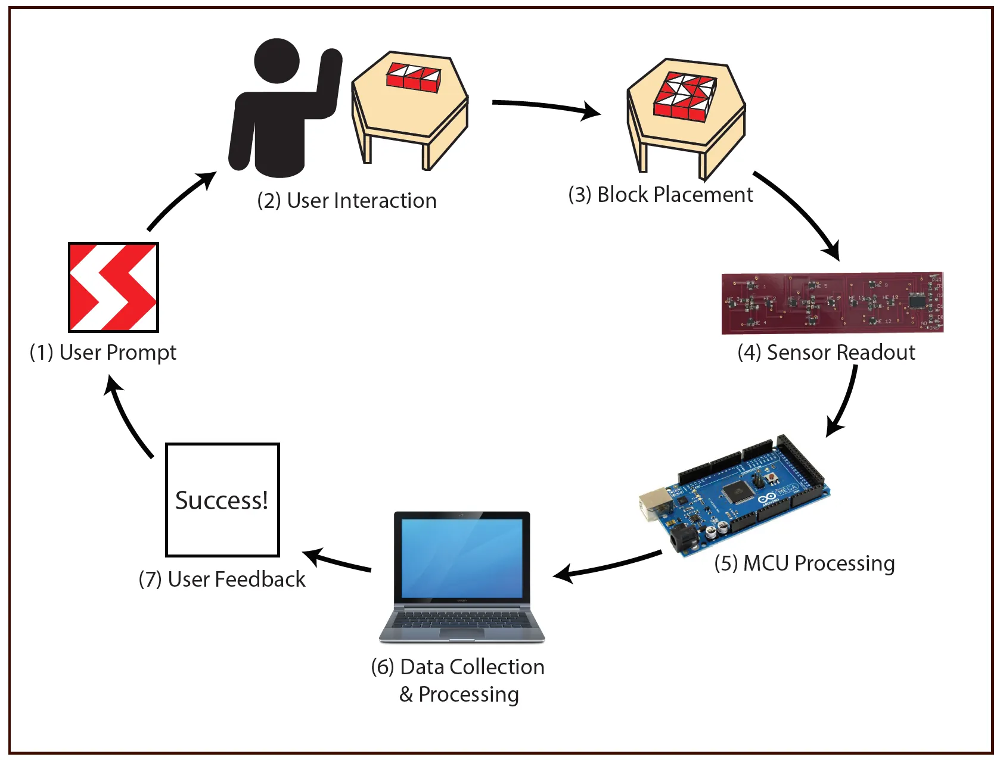